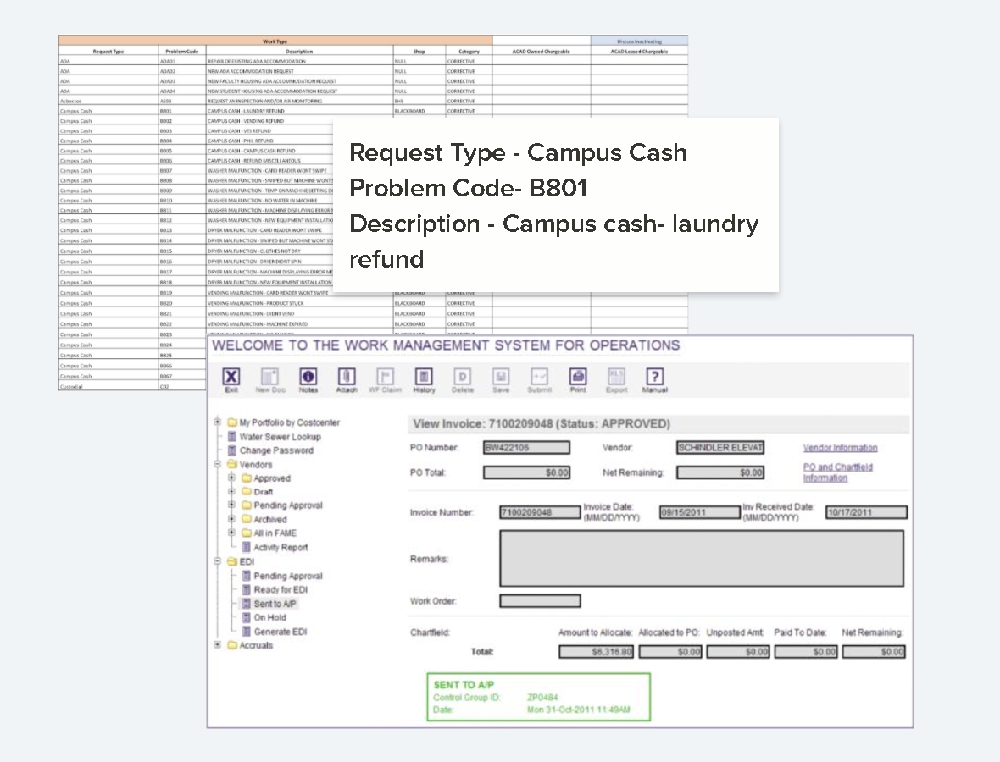
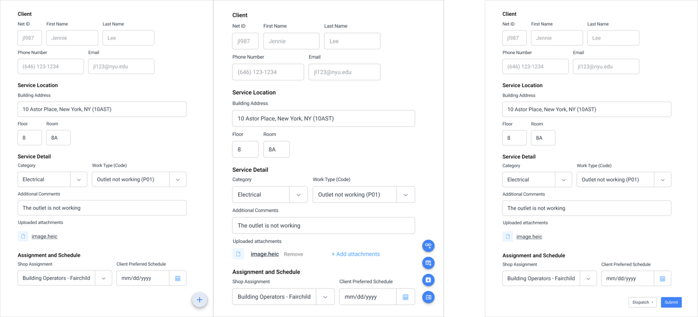
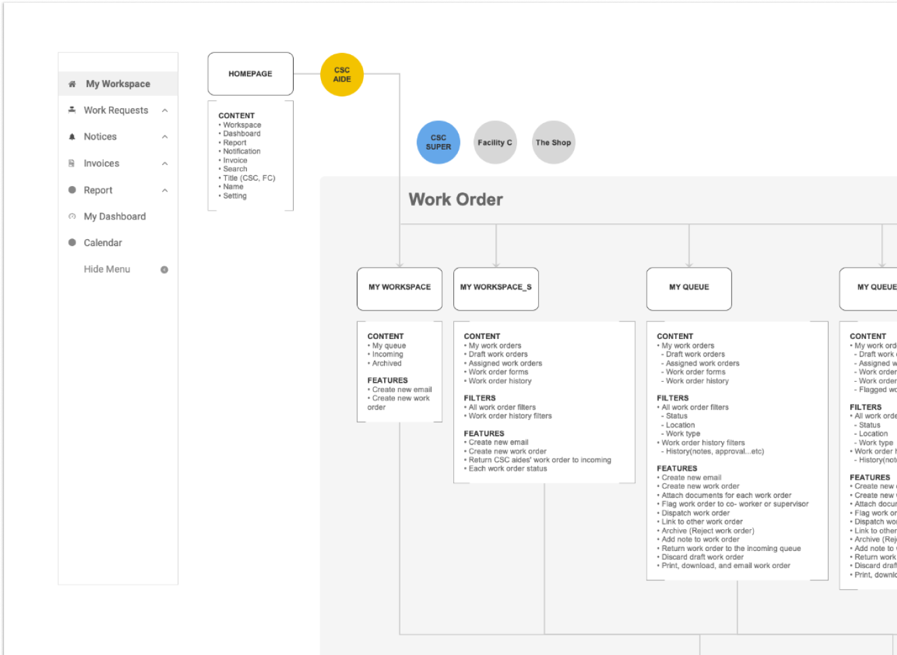
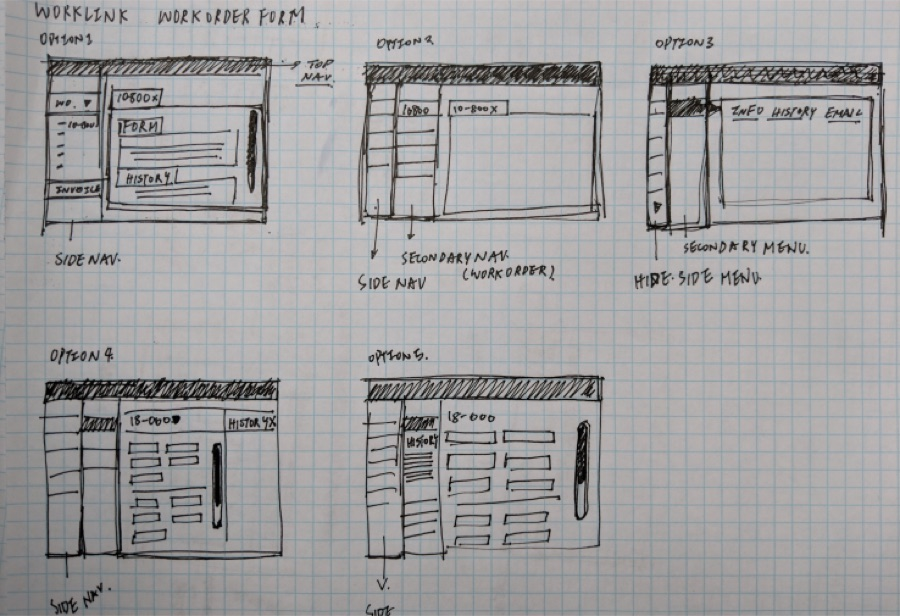
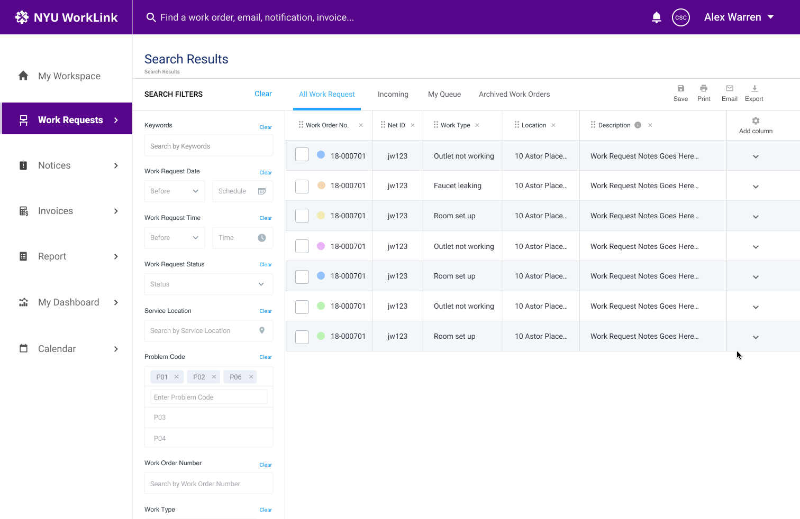

NYU · Internal tools · Case study
One platform replaced the CSV files and the software-hopping for NYU’s Client Service staff. In its first month, average work-request turnaround fell by about a third.
The problem
NYU Client Service staff processed maintenance requests by hand: a CSV here, a legacy screen there. Finding any request’s history meant jumping between systems.
One representative request (Type “Campus Cash,” Problem Code B801, “Campus cash — laundry refund”) had no single accurate record to communicate from. Neither did any other request.
No single record
B801 · Campus cash — laundry refund
Type: Campus Cash
Request B801, a laundry refund, existed as three hand-typed copies. No tool held its full history.

“As a Client Service Staff at NYU, I want to have an accurate maintenance record so that we can communicate more effectively with departments and clients.” User story from process work
The insight
I mapped how a request travels, from submitter to Client Service Center to maintenance, and found that most requests are multi-step and cross departments.
That changed the brief from “replace the CSV with a form” to “represent a request’s full lifecycle in one place.”
Submitters
Who
Does
“The heater is not working.”
Client Service Center
Who
Does
Maintenance
Who
Does
The solution
We stated the bet before we built: with one record, staff communicate confidently, process faster, and train new employees more easily.
I replaced the CSV files and multiple platforms with one work-order platform, so there was nothing left to switch between.
I weighed overload against scannability and chose a continuous form over a paginated one: a multi-department request stays visible in one pass.
I weighed button visibility against minimizing distraction and kept the floating action button so the primary action stays in reach while staff review dense request details.

I ran two pre-launch loops: Client Service and maintenance staff signed off on workflow; engineering walked specs and edge cases per request type.


Outcome
We set the measurement plan in the deck before launch and instrumented all three metrics on day one. The first to report back was average work-request turnaround.
Honest denominator: the ~33% comes from our own first-month post-launch analytics, not the deck. It’s early and directional, but the plan behind it was set before we shipped.
Post-launch
Pre-launch review flagged the next scope: search, and grouping multiple work orders. Next I’d measure the overload-versus-scannability tradeoff directly, and track remaining email-heavy overhead.
The open question I still carry is how much of a service problem belongs in the digital tool, and how much in the physical space around it.
